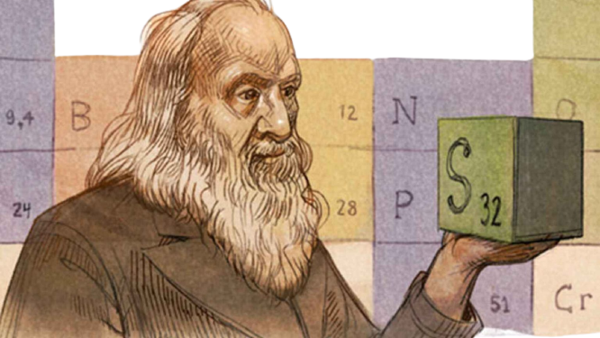
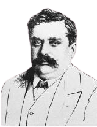

Historia de la Tabla Periodica.
La tabla periódica de los elementos es una disposición de los elementos químicos
en forma de tabla, ordenados por su número atómico (número de protones),2 por su configuración de
electrones y sus propiedades químicas. Este ordenamiento muestra tendencias periódicas como elementos
con comportamiento similar en la misma columna.
En palabras de Theodor Benfey, la tabla y la ley periódica son el corazón de la
química comparables a la
teoría de la evolución en biología (que sucedió al concepto de la scala naturae), y a los principios de
termodinámica en la física clásica.
Las filas de la tabla se denominan períodos y las columnas grupos.4 Algunos grupos
tienen nombres, así
por ejemplo el grupo 17 es el de los halógenos y el grupo 18 el de los gases nobles.5 La tabla también
se divide en cuatro bloques con algunas propiedades químicas similares.6 Debido a que las posiciones
están ordenadas, se puede utilizar la tabla para obtener relaciones entre las propiedades de los
elementos, o pronosticar propiedades de elementos nuevos todavía no descubiertos o sintetizados. La
tabla periódica proporciona un marco útil para analizar el comportamiento químico y es ampliamente
utilizada en química y otras ciencias.
Dmitri Mendeléyev publicó en 1869 la primera versión de tabla periódica
que fue
ampliamente reconocida,
la desarrolló para ilustrar tendencias periódicas en las propiedades de los elementos entonces
conocidos, al ordenar los elementos basándose en sus propiedades químicas,7 si bien Julius
Lothar Meyer,
trabajando por separado, llevó a cabo un ordenamiento a partir de las propiedades físicas de los
átomos.8 Mendeléyev también pronosticó algunas propiedades de elementos entonces desconocidos
que
anticipó que ocuparían los lugares vacíos en su tabla. Posteriormente se demostró que la mayoría
de sus
predicciones eran correctas cuando se descubrieron los elementos en cuestión
La tabla periódica de Mendeléyev ha sido desde entonces ampliada y
mejorada con el
descubrimiento o síntesis de elementos nuevos y el desarrollo de modelos teóricos nuevos para
explicar
el comportamiento químico. La estructura actual fue diseñada por Alfred Werner a partir de la
versión de
Mendeléyev. Existen además otros arreglos periódicos de acuerdo a diferentes propiedades y según
el uso
que se le quiera dar (en didáctica, geología, etc.).9 Para celebrar el 150 aniversario de su
creación,
la UNESCO declaró 2019 como el Año Internacional de la Tabla Periódica de los Elementos
Químicos.
Se han descubierto o sintetizado todos los elementos de número atómico del 1
(hidrógeno) al 118 (oganesón); la IUPAC confirmó los elementos 113, 115, 117 y 118 el 30 de diciembre de
2015,10 y sus nombres y símbolos oficiales se hicieron públicos el 28 de noviembre de 2016.1 Los
primeros 94 existen naturalmente, aunque algunos solo se han encontrado en cantidades pequeñas y fueron
sintetizados en laboratorio antes de ser encontrados en la naturaleza.n. 1 Los elementos con números
atómicos del 95 al 118 solo han sido sintetizados en laboratorios. Allí también se produjeron numerosos
radioisótopos sintéticos de elementos presentes en la naturaleza. Los elementos del 95 a 100 existieron
en la naturaleza en tiempos pasados, pero actualmente no.11 La investigación para encontrar por síntesis
nuevos elementos de números atómicos más altos continúa.
Historia de la Tabla Periodica.
Aunque algunos elementos como el oro (Au), plata (Ag), cobre (Cu), plomo (Pb) y mercurio (Hg) ya eran
conocidos desde la antigüedad, el primer descubrimiento científico de un elemento ocurrió en el siglo
xvii d. C., cuando el alquimista Hennig Brand descubrió el fósforo (P).13 En el siglo xviii d. C. se
conocieron numerosos nuevos elementos, los más importantes de los cuales fueron los gases, con el
desarrollo de la química neumática: oxígeno (O), hidrógeno (H) y nitrógeno (N). También se consolidó en
esos años la nueva concepción de elemento, que condujo a Antoine Lavoisier a escribir su famosa lista de
sustancias simples, donde aparecían 33 elementos. A principios del siglo xix d. C., la aplicación de la
pila eléctrica al estudio de fenómenos químicos condujo al descubrimiento de nuevos elementos, como los
metales alcalinos y alcalino-térreos, sobre todo gracias a los trabajos de Humphry Davy. En 1830 ya se
conocían 55 elementos. Posteriormente, a mediados del siglo xix d. C., con la invención del
espectroscopio, se descubrieron nuevos elementos, muchos de ellos nombrados por el color de sus líneas
espectrales características: cesio (Cs, del latín caesĭus, azul), talio (Tl, de tallo, por su color
verde), rubidio (Rb, rojo), etc. Durante el siglo xx d. C., la investigación en los procesos
radioactivos llevó al descubrimiento en cascada de una serie de elementos pesados (casi siempre
sustancias artificiales sintetizadas en laboratorio, con periodos de vida estable muy cortos), hasta
alcanzar la cifra de 118 elementos con denominación oficialmente aceptados por la IUPAC en noviembre de
2016.1
Noción de elemento y propiedades periódicas.
Lógicamente, un requisito previo necesario a la construcción de la tabla periódica era el descubrimiento
de un número suficiente de elementos individuales, que hiciera posible encontrar alguna pauta en
comportamiento químico y sus propiedades. Durante los siguientes dos siglos se fue adquiriendo un mayor
conocimiento sobre estas propiedades, así como descubriendo muchos elementos nuevos.
La palabra «elemento» procede de la ciencia griega, pero su noción moderna apareció a lo largo del siglo
xvii d. C., aunque no existe un consenso claro respecto al proceso que condujo a su consolidación y uso
generalizado. Algunos autores citan como precedente la frase de Robert Boyle en su famosa obra El
químico escéptico, donde denomina elementos «ciertos cuerpos primitivos y simples que no están formados
por otros cuerpos, ni unos de otros, y que son los ingredientes de que se componen inmediatamente y en
que se resuelven en último término todos los cuerpos perfectamente mixtos». En realidad, esa frase
aparece en el contexto de la crítica de Robert Boyle a los cuatro elementos aristotélicos.
A lo largo del siglo xviii d. C., las tablas de afinidad recogieron un nuevo modo
de entender la composición química, que aparece claramente expuesto por Lavoisier en su obra Tratado
elemental de química. Todo ello condujo a diferenciar en primer lugar qué sustancias de las conocidas
hasta ese momento eran elementos químicos, cuáles eran sus propiedades y cómo aislarlas.
El descubrimiento de gran cantidad de elementos nuevos, así como el estudio de sus
propiedades, pusieron de manifiesto algunas semejanzas entre ellos, lo que aumentó el interés de los
químicos por buscar algún tipo de clasificación.
Los pesos Atomicos.
A principios del siglo xix d. C., John Dalton (1766-1844) desarrolló una
concepción nueva del atomismo, a la que llegó gracias a sus estudios meteorológicos y de los gases de la
atmósfera. Su principal aportación consistió en la formulación de un «atomismo químico» que permitía
integrar la nueva definición de elemento realizada por Antoine Lavoisier (1743-1794) y las leyes
ponderales de la química (proporciones definidas, proporciones múltiples, proporciones recíprocas).
Dalton empleó los conocimientos sobre proporciones en las que reaccionaban las
sustancias de su época y realizó algunas suposiciones sobre el modo como se combinaban los átomos de las
mismas. Estableció como unidad de referencia la masa de un átomo de hidrógeno (aunque se sugirieron
otros en esos años) y refirió el resto de los valores a esta unidad, por lo que pudo construir un
sistema de masas atómicas relativas. Por ejemplo, en el caso del oxígeno, Dalton partió de la suposición
de que el agua era un compuesto binario, formado por un átomo de hidrógeno y otro de oxígeno. No tenía
ningún modo de comprobar este punto, por lo que tuvo que aceptar esta posibilidad como una hipótesis a
priori
Dalton sabía que una parte de hidrógeno se combinaba con siete partes (ocho,
afirmaríamos en la actualidad) de oxígeno para producir agua. Por lo tanto, si la combinación se
producía átomo a átomo, es decir, un átomo de hidrógeno se combinaba con un átomo de oxígeno, la
relación entre las masas de estos átomos debía ser 1:7 (o 1:8 se calcularía en la actualidad). El
resultado fue la primera tabla de masas atómicas relativas (o pesos atómicos, como los llamaba Dalton),
que fue modificada y desarrollada en años posteriores. Las inexactitudes antes mencionadas dieron lugar
a toda una serie de polémicas y disparidades respecto a las fórmulas y los pesos atómicos, que solo
comenzarían a superarse, aunque no totalmente, en el congreso de Karlsruhe en 1860.
Primeros Intentos
En 1789 Antoine Lavoisier publicó una lista de 33 elementos químicos, agrupándolos
en gases, metales, no metales y tierras.1415 Aunque muy práctica y todavía funcional en la tabla
periódica moderna, fue rechazada debido a que había muchas diferencias tanto en las propiedades físicas
como en las químicas.
Los químicos pasaron el siglo siguiente buscando un esquema de clasificación más
preciso. Uno de los primeros intentos para agrupar los elementos de propiedades análogas y relacionarlos
con los pesos atómicos se debe al químico alemán Johann Wolfgang Döbereiner (1780-1849) quien en 1817
puso de manifiesto el notable parecido que existía entre las propiedades de ciertos grupos de tres
elementos, con una variación gradual del primero al último. Posteriormente (1827) señaló la existencia
de otros grupos en los que se daba la misma relación —cloro, bromo y yodo; azufre, selenio y telurio;
litio, sodio y potasio—.
A estos grupos de tres elementos se los denominó tríadas. Al clasificarlas,
Döbereiner explicaba que el peso atómico promedio de los pesos de los elementos extremos, es parecido al
del elemento en medio.16Esto se conoció como la ley de Tríadas.17 Por ejemplo, para la tríada
cloro-bromo-yodo, los pesos atómicos son respectivamente 36, 80 y 127; el promedio es 81, que es
aproximadamente 80; el elemento con el peso atómico aproximado a 80 es el bromo, lo cual hace que
concuerde con el aparente ordenamiento de tríadas.
El químico alemán Leopold Gmelin trabajó con este sistema, y en 1843 había
identificado diez tríadas, tres grupos de cuatro, y un grupo de cinco. Jean-Baptiste Dumas publicó el
trabajo en 1857 que describe las relaciones entre los diversos grupos de metales. Aunque los diversos
químicos fueron capaces de identificar las relaciones entre pequeños grupos de elementos, aún tenían que
construir un esquema que los abarcara a todos.16
En 1857 el químico alemán August Kekulé observó que el carbono está a menudo unido
a otros cuatro átomos. El metano, por ejemplo, tiene un átomo de carbono y cuatro átomos de hidrógeno.18
Este concepto finalmente se conocería como «valencia».19
En 1862 de Chancourtois, geólogo francés, publicó una primera forma de tabla
periódica que llamó la «hélice telúrica» o «tornillo». Fue la primera persona en notar la periodicidad
de los elementos. Al disponerlos en espiral sobre un cilindro por orden creciente de peso atómico, de
Chancourtois mostró que los elementos con propiedades similares parecían ocurrir a intervalos regulares.
Su tabla incluye además algunos iones y compuestos. También utiliza términos geológicos en lugar de
químicos y no incluye un diagrama; como resultado, recibió poca atención hasta el trabajo de Dmitri
Mendeléyev.20
En 1864 Julius Lothar Meyer, un químico alemán, publicó una tabla con 44 elementos
dispuestos por valencia. La misma mostró que los elementos con propiedades similares a menudo compartían
la misma valencia.21 Al mismo tiempo, William Odling —un químico inglés— publicó un arreglo de 57
elementos ordenados en función de sus pesos atómicos. Con algunas irregularidades y vacíos, se dio
cuenta de lo que parecía ser una periodicidad de pesos atómicos entre los elementos y que esto estaba de
acuerdo con «las agrupaciones que generalmente recibían».22 Odling alude a la idea de una ley periódica,
pero no siguió la misma.23 En 1870 propuso una clasificación basada en la valencia de los elementos.24
La tabla periódica de los elementos químicos es una herramienta de organización de todos los elementos
conocidos y es de utilidad tanto para la química como para otras disciplinas como la biología y la
física, asegura el Foro Química y Sociedad, una plataforma española que reúne entidades vinculadas al
ámbito químico. Su creación se produjo hace más de 150 años.
Origen de la Tabla periodica

De acuerdo con el Foro Química y Sociedad, a mediados del siglo XIX ya se
conocían en el ámbito científico 63 elementos químicos. A pesar de estos grandes avances, los
científicos no se ponían de acuerdo sobre su terminología ni sobre cómo ordenarlos.
El primer intento de clasificar los elementos se produjo en 1789 cuando el
químico francés Antoine Lavoisier agrupó los elementos según sus propiedades en gases, no
metales, metales y tierras, asegura la Royal Society of Chemistry (RSC), una sociedad científica
del Reino Unido.
Teoria Cuantica.
Posteriormente hubo otros intentos para agrupar elementos. Por ejemplo, en 1829 el
químico alemán Johann Döbereiner reconoció tríadas de elementos con propiedades químicas similares (como
el litio, el sodio y el potasio) y demostró que las propiedades del elemento intermedio podían
predecirse a partir de las propiedades de los otros dos.
Sin embargo, reconoce la RSC, no fue hasta que una lista más precisa de la masa ade los elementos estuvo
disponible que se hizo un progreso real hacia el descubrimiento de la tabla periódica moderna.
Según el Foro español, esto sucedió tras el primer Congreso Internacional de
Químicos realizado en 1860 en Karlsruhe (Alemania). Ese encuentro resultó trascendental, asegura la
plataforma, dado que allí el italiano Stanislao Cannizzaro estableció el concepto de peso atómico (masa
atómica relativa de un elemento).
El aporte de Canizzaro sirvió de inspiración para los participantes del congreso. Uno de ellostómica fue
Dimitri Mendeléyev, quien fue el primero en publicar una versión de la tabla periódica actual.
Este científico ruso clasificó los elementos hasta entonces descubiertos por orden
creciente de peso atómico y colocó en la misma columna aquellos que poseían propiedades químicas
similares.
La verdadera genialidad del logro de Mendeléyev fue dejar huecos para elementos no descubiertos e
incluso predijo las propiedades de cinco de estos elementos y sus compuestos, asegura la RSC.
(También podría interesarte: ¿Quién fue Alan Turing?, pionero en el desarrollo de
la Inteligencia Artificial y la computación moderna)
Además, según el cálculo de sus propiedades químicas pudo determinar qué elementos aún estaban por
descubrirse y predijo el lugar exacto que ocuparían en la tabla periódica. Oficialmente, Mendeléyev
finalizó la tabla el 1 de marzo de 1869.
Aunque Mendeléyev no recibió un premio por su aporte, fue reconocido con el nombramiento en su honor del
elemento 101: Mendelevium.
Quien Invento La Tabla Periodica.

Alfred Werner
La actual versión de la tabla periódica que usamos hoy fue creada por el premio nobel de química
Alfred Werner. En la tabla periódica de elementos moderna aparecen 118 elementos de los cuales,
94 elementos son naturales y el resto fueron sintetizados en laboratorios.
PERSONAS QUE LA PROPUSIERON
Dimitri Mendeyelev
Jhon Alexander Reina
Johan Debereiner
Antoine Lavosier